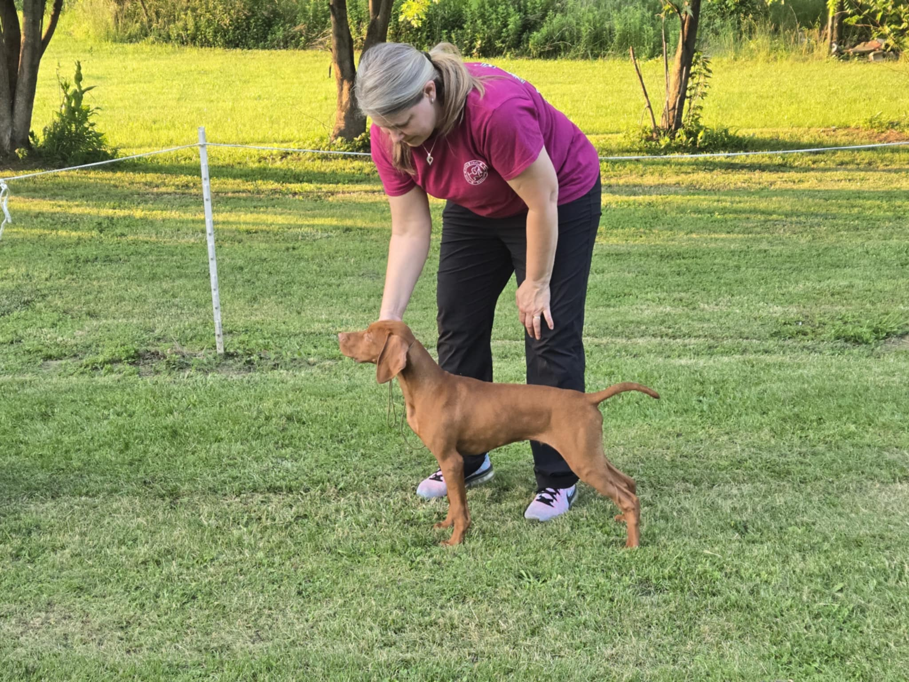

I have always loved dogs and have hada few different breeds as I have grown from a child to an adult. Growing up my parents rescued a long-haired beagle puppy (genetic deformity, therefore planned to be euthanized) from a animal testing lab. He lived for 12 years and then a few years later we got a Black Labrador. She was a sweet and intelligent dog. We had her only 6 months before we tragically lost her to a car accident on Christmas night. We were all devastated and did not pursue owning another dog. After beinng married 5 years, having 3 children and moving to a house with 3 acres of woodlands, we decided to rescue a black and tan coonhound from the local shelter. Two more resues followed, and after losing the 1st and 3rd dog, in 2019 we bought Lilah.
Lilah is a Vizsla. I had not heard of the breed before, but as I researched about their fierce loyalty to their owners, needing to always be near and preferably in contact with them, I knew it was the breed for me. Our children are grown and we have two grandchildren and three vizlsas. Lilah is currently 5 years old and she was joined by Charlie in 2023. With breeding as a long term goal, I started showing Charlie in AKC conformation shows. Above is our picture at the 2023 National Dog Show where he won his first major. He is halfway to earning his champion title. In February, I had the opportunity to help whelp a Vizsla litter and then unexpectedly adopted one of those pups. His name is Micah, pictured below.
{kind=link}